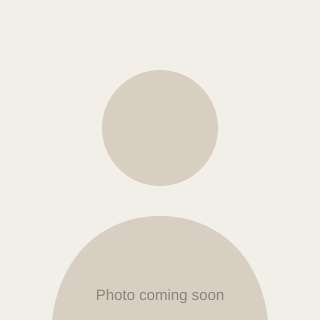

This website
My first step into the web: built in VS Code with Claude Code and published automatically on every change.
View the source →Hi, I'm
Mechanical Technician · CNC Operator
I run CNC machines for glass and metal processing. I enjoy precise work, where mistakes are measured in hundredths of a millimetre and the result is something you can hold in your hand.

I am a mechanical technician by training. I have worked as a CNC operator in glass and metal processing: from reading the technical drawing and preparing the program, through setting up the machine and tools, to checking the finished part.
What matters most to me is that work is done accurately and safely. I like to understand how a machine works rather than just pressing "start". That curiosity is also how this website came to be.
Operating a CNC machine for glass: cutting, edge grinding and drilling to measure. Tool setup, process monitoring and dimensional inspection of finished pieces.
Machining metal parts from technical drawings. Entering and correcting programs, choosing and changing tools, measuring with callipers and micrometers.
Technical drawing, machine elements, machining technology and the basics of CNC programming.
My first step into the web: built in VS Code with Claude Code and published automatically on every change.
View the source →Glass panels in non-standard shapes with ground edges and drilled holes, for furniture and interiors.
Setting up the machine and program for a production run so every part stays within tolerance with minimal scrap.
A weekly game with friends, and cheering on weekends.
The best way to switch off and think in peace.
Strategy games and games with a good story.
Discovering small towns and local food.
Did you know? Glass is never cut dry on a CNC machine. The tool is cooled with water the whole time, otherwise the edge would crack.
Have a job, a question or an offer? Get in touch, I reply quickly.